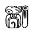
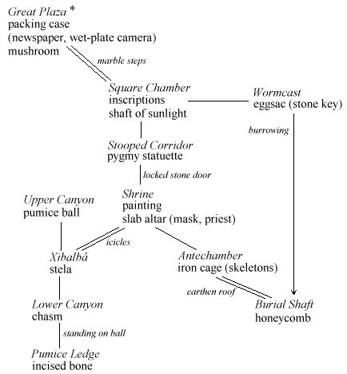

These fragments I have shored against my ruins
— T. S. Eliot (1888–1965), The Waste Land
 Though ‘Ruins’ is a small world, and distorted in shape by the needto have “one example of everything”, it seems worth a few pages to gather together the fragments scattered through the book so far and complete the game.
To begin with, the stage set back in §4 was too generic, too plain. Chosen at random, it may as well become La Milpa, a site rediscovered in dense rainforest by Eric Thompson in 1938, towards the end of the glory days of archaeological exploration. (La Milpa has been sadly looted since.) Though this is something of a cliché of interactive fiction, ‘Ruins’ contains two objects whose purpose is to anchor the player in time and place. Lining the packing case, we find:
Object -> -> newspaper "month-old newspaper"
with name 'times' 'newspaper' 'paper' 'month-old' 'old',
description
"~The Times~ for 26 February, 1938, at once damp and brittle
after a month's exposure to the climate, which is much the
way you feel yourself. Perhaps there is fog in London.
Perhaps there are bombs.";
And among the player's initial possessions:
Object map "sketch-map of Quintana Roo"
with name 'map' 'sketch' 'sketch-map' 'quintana' 'roo',
description
"This map marks little more than the creek which brought you
here, off the south-east edge of Mexico and into deepest
rainforest, broken only by this raised plateau.";
To turn from the setting to the prologue, it is a
little too easy to enter the structure in the rainforest. And if the
steps were always open, surely the rain would sluice in? Recall that
the Forest includes inward map connections to the steps,
which are a door, instead of to the Square_Chamber directly:
d_to steps, in_to steps,
The steps are, however, intentionally blocked by rubble, as happened in thecase of the hidden staircase found by Alberto Ruz beneath the Temple of theInscriptions at another site, Palenque:
Object -> steps "stone-cut steps"
with name 'steps' 'stone' 'stairs' 'stone-cut' 'pyramid' 'burial'
'structure' 'ten' '10',
rubble_filled true,
description [;
if (self.rubble_filled)
"Rubble blocks the way after only a few steps.";
print "The cracked and worn steps descend into a dim
chamber. Yours might ";
if (Square_Chamber hasnt visited)
print "be the first feet to tread";
else print "have been the first feet to have trodden";
" them for five hundred years. On the top step is
inscribed the glyph Q1.";
],
door_to [;
if (self.rubble_filled)
"Rubble blocks the way after only a few steps.";
return Square_Chamber;
],
door_dir d_to
has scenery door open;
Next we must face the delicate issue of how to get from
the mundane 1930s to a semi-magical Maya world. The stock device of
Miguel Angel Asturias's Leyendas de Guatemala and other founding
works of magic realism (indeed, of Wuthering Heights come to
think of it) is for the arriving, European rationalist to become
fascinated by a long tale told by local peasants. This would take too
much code to get right in so small a game, though, and there also
remains the unresolved question of what the mushroom is for.
So we delete the original before rule for the mushroom,
which made eating it potentially fatal, and instead give it an after:
Eat: steps.rubble_filled = false;
"You nibble at one corner, unable to trace the source of an
acrid taste, distracted by the flight of a macaw overhead
which seems to burst out of the sun, the sound of the beating
of its wings almost deafening, stone falling against stone.";

* The player begins at the Great Plaza, carrying the map, the sodium lamp and Waldeck's Mayan dictionary. [description]
This is fairly authentic, as a cult of hallucinogenic mushrooms seems to have existed. Anyway, the player is getting off pretty lightly considering that Maya lords also went in for narcotic enemas and ritual blood-letting from the tongue and penis, an interactive fiction for which the world is not yet ready.
Descending underground, §8 alluded to an eggsac which burst on contact with natural light. Naturally, this repellent object belongs in the Wormcast, and here is its definition:
Object -> eggsac "glistening white eggsac",
with name 'egg' 'sac' 'eggs' 'eggsac',
initial "A glistening white eggsac, like a clump of frogspawn
the size of a beach ball, has adhered itself to something
in a crevice in one wall.",
after [;
Take: "Oh my.";
],
react_before [;
Go: if (location == Square_Chamber && noun == u_obj) {
deadflag = true;
"The moment that natural light falls upon the
eggsac, it bubbles obscenely and distends. Before
you can throw it away, it bursts into a hundred
tiny, birth-hungry insects...";
}
];
Note the clue that some object is within the egg sac: as it turned out in §8, a stone key, released by putting the egg sac into the shaft of sunlight. The key itself has a very short definition:
Object stone_key "stone key" with name 'stone' 'key';
This is not an easy puzzle, but a further clue is provided by the carvings onthe Stone Chamber wall, which can be translated with Waldeck's dictionary to read “becoming the Sun/life”.
Given the key, the player must next solve the problem
of bringing light to the Stooped Corridor, by pushing the burning sodium
lamp south. This means, as promised in §14,
adding a before rule to the lamp:
PushDir:
if (location == Shrine && second == sw_obj)
"The nearest you can do is to push the sodium lamp to
the very lip of the Shrine, where the cave floor falls
away.";
AllowPushDir(); rtrue;
§14 also promised to
run down the battery power: although since 100 turns is plenty, this
rule doesn't play any real part in the game and is just window-dressing.
We need to StartDaemon(sodium_lamp) in the Initialise
routine, and define the lamp's daemon along the following lines:
daemon [;
if (self hasnt on) return;
if (--self.battery_power == 0)
give self ~light ~on;
if (self in location) {
switch (self.battery_power) {
10: "^The sodium lamp is getting dimmer!";
5: "^The sodium lamp can't last much longer.";
0: "^The sodium lamp fades and suddenly dies.";
}
}
],
With the obligatory light puzzle solved, the Shrine can at last be opened:
Object Shrine "Shrine"
with description
"This magnificent Shrine shows signs of being hollowed out
from already-existing limestone caves, especially in the
western of the two long eaves to the south.",
n_to StoneDoor, se_to Antechamber,
sw_to
"The eaves taper out into a crevice which would wind
further if it weren't jammed tight with icicles. The glyph
of the Crescent is not quite obscured by ice.";
Looking up the Crescent glyph in the dictionary (§16) reveals that it stands for the word “xibalbá”: asking the Priest (§17) brought into existence by wearing the jade mosaic mask (§11) melts the icicles and makes the southwest connection to Xibalbá, of which more later. No Maya game would be complete without their religiously-observed cyclical countings of time:
Object -> paintings "paintings"
with name 'painting' 'paintings' 'lord' 'captive',
initial "Vividly busy paintings, of the armoured Lord trampling
on a captive, are almost too bright to look at, the
graffiti of an organised mob.",
description "The flesh on the bodies is blood-red. The markers
of the Long Count date the event to 10 baktun 4 katun 0 tun
0 uinal 0 kin, the sort of anniversary when one Lord would
finally decapitate a captured rival who had been ritually
tortured over a period of some years, in the Balkanised
insanity of the Maya city states.",
has static;
Having called the priest “calendrical”,
here's another topic to Ask the priest about:
'paintings': "The calendrical priest frowns.
~10 baktun, 4 katun, that makes 1,468,800 days
since the beginning of time: in your calendar
19 January 909.~";
And also, to make the point once more, and remind the player once again ofdistant Europe:
Show, Give: ...
if (noun == newspaper)
"He looks at the date. ~12 baktun 16 katun 4 tun
1 uinal 12 kin~, he declares before browsing the
front page. ~Ah. Progress, I see.~";
Perhaps the player will never see either calculation: if so, it doesn't matter, as dates and calendars turn out to be this game's red herring. (Every game should have one.) The Antechamber of the Shrine is an undistinguished room…
Object Antechamber "Antechamber"
with description
"The southeastern eaves of the Shrine make a curious
antechamber.",
nw_to Shrine;
… except that this is where the iron cage (§15 and §21) is located, so that the Burial Shaft lies below, with its complex puzzle in which the player is transformed to a warthog and back again, opening the shaft. Lastly, then, in the southwest eaves of the Shrine is a natural cave entrance, which in Mayan mythology leads to the Underworld. There is supposed to be a crossroads here, but in this modest game a three-way junction is all we have space for:
Object Junction "Xibalb@'a"
with description
"Fifty metres beneath rainforest, and the sound of water
is everywhere: these deep, eroded limestone caves
extend like tap roots. A slither northeast by a broad
collapsed column of ice-covered rock leads back to the
Shrine, while a kind of canyon floor extends uphill to
the north and downwards to south, pale white like shark's
teeth in the diffused light from the sodium lamp above.",
ne_to Shrine, n_to Canyon_N, u_to Canyon_N,
s_to Canyon_S, d_to Canyon_S,
has light;
Treasure -> stela "stela"
with name 'stela' 'boundary' 'stone' 'marker',
initial
"A modest-sized stela, or boundary stone, rests on a
ledge at head height.",
description
"The carvings appear to warn that the boundary of
Xibalb@'a, Place of Fright, is near. The Bird glyph is
prominent.";
This canyon houses the eight-foot pumice stone ball (see §15) at the north end, and the chasm (§12, §21) at the south:
Object Canyon_N "Upper End of Canyon"
with s_to Junction, d_to Junction,
description
"The higher, broader northern end of the canyon rises only
to an uneven wall of volcanic karst.",
has light;
Object Canyon_S "Lower End of Canyon"
with n_to Junction, u_to Junction,
s_to "Into the chasm?", d_to nothing,
description
"At the lower, and narrower, southern end, the canyon stops
dead at a chasm of vertiginous blackness. Nothing can be
seen or heard from below.",
has light;
As promised in §12, the chasm must react to having the stone ball pushed into it, which means adding this to the chasm's definition:
each_turn [;
if (huge_ball in parent(self)) {
remove huge_ball; Canyon_S.s_to = On_Ball;
Canyon_S.description = "The southern end of the canyon
now continues onto the pumice-stone ball, wedged into
the chasm.";
"^The pumice-stone ball rolls out of control down the
last few feet of the canyon before shuddering into the
jaws of the chasm, bouncing back a little and catching
you a blow on the side of the forehead. You slump
forward, bleeding, and... the pumice-stone shrinks,
or else your hand grows, because you seem now to be
holding it, staring at Alligator, son of seven-Macaw,
across the ball-court of the Plaza, the heads of his
last opponents impaled on spikes, a congregation baying
for your blood, and there is nothing to do but to throw
anyway, and... but this is all nonsense, and you have
a splitting headache.";
}
],
(Horribly violent, semi-religious ball-game rituals are common in early central America, though nobody knows why: all substantial Maya cities have prominent ball-courts.) A fat paragraph of text in which fairly interesting thingshappen, beyond the player's control, is sometimes called a “cut-scene”. Most critics dislike the casual use of cut-scenes, and ‘Ruins’ would be a better game if the confrontation with Alligator were an interactive scene. But this manual hasn't the space. Instead, here is the final location, which represents “standing on the wedged ball”:
Object On_Ball "Pumice-Stone Ledge"
with n_to Canyon_S, d_to Canyon_S, u_to Canyon_S,
description
"An impromptu ledge formed by the pumice-stone ball,
wedged into place in the chasm. The canyon nevertheless
ends here.",
has light;
Treasure -> "incised bone"
with name 'incised' 'carved' 'bone',
initial
"Of all the sacrificial goods thrown into the chasm, perhaps
nothing will be reclaimed: nothing but an incised bone,
lighter than it looks, which projects from a pocket of wet
silt in the canyon wall.",
description
"A hand holding a brush pen appears from the jaws of
Itzamn@'a, inventor of writing, in his serpent form.";
And this is where Itzamná lays down his brush,
for this is the fifth and last of the cultural artifacts to collect.
The game ends when they are all deposited in the packing case, a rule
which means a slight expansion of the definition of Treasure:
after [;
Insert:
...
if (score == MAX_SCORE) {
deadflag = 2;
"As you carefully pack away ", (the) second,
" a red-tailed macaw flutters down from the tree-tops,
feathers heavy in the recent rain, the sound of its
beating wings almost deafening, stone falling against
stone... As the skies clear, a crescent moon rises above
a peaceful jungle. It is the end of March, 1938, and it
is time to go home.";
}
▲ The following sequence of 111 moves tests ‘Ruins’ from beginning to end: “examine case / read newspaper / get newspaper / get camera / down / examine steps / east / up / enter structure 10 / eat mushroom / eat mushroom / down / examine inscriptions / look up arrow in dictionary / east / get eggsac / west / put eggsac in sunlight / get key / drop lamp / light lamp / look / push lamp s / get statuette / drop all except camera / photograph statuette / get key / open door / unlock door with key / open door / drop key / get pygmy / north / up / put pygmy in case / down / south / get dictionary / get newspaper / south / north / push lamp south / examine paintings / drop all but camera / photograph mask / get mask / get dictionary / get newspaper / wear mask / show dictionary to priest / show newspaper to priest / drop newspaper / ask priest about ruins / ask priest about paintings / se / nw / push lamp se / push lamp nw / sw / look up crescent in dictionary / ask priest about xibalba / sw / north / push ball south / push ball south / south / drop all but camera / remove mask / drop mask / photograph bone / get all / north / north / drop all but camera / photograph stela / get all / ne / north / north / up / put bone in case / put stela in case / put mask in case / down / east / nw / west / south / south / push lamp se / examine cage / enter cage / open cage / nw / north / north / east / down / east / up / drop all but camera / photograph honeycomb / get all / up / open cage / out / push lamp nw / north / north / up / put honeycomb in case”.
• REFERENCES
I am indebted to, which is to say I have roundly travestied, the following:
“Mapping La Milpa: a Maya city in northwestern Belize” (Tourtellot,
Clarke and Hammond, Antiquity 67 (1993), 96–108). All the
same ‘Ruins’ favours old-fashioned ideas of Maya, a good example
being the “calendrical priests” fondly imagined by early
archaeologists before Maya writing was deciphered.
•The standard all-in-one-book book
is Michael
D. Coe's The Maya (fourth edition).
•The same author's history of
Breaking the Maya Code offers pungently vivid portraits of Sir
Eric Thompson and Maximilien Waldeck. The British Museum guide Maya
Glyphs, by S. D. Houston, is a trifle more reliable than Waldeck's
work.
•Numerous colour-postcard photographs
by F. Monfort are collected in Yucatan and the Maya Civilization
(Crescent Books, 1978).